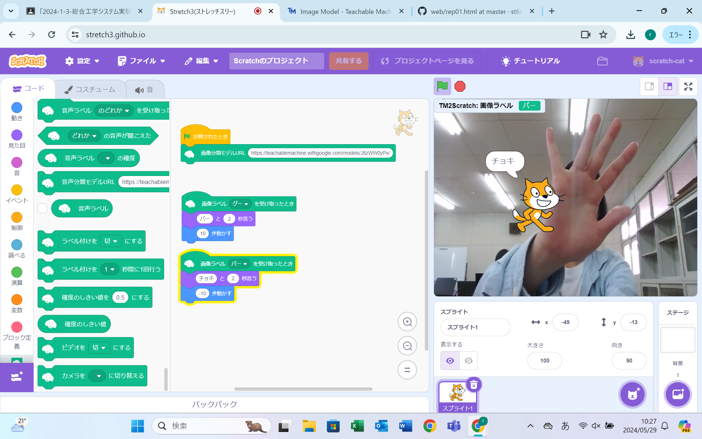
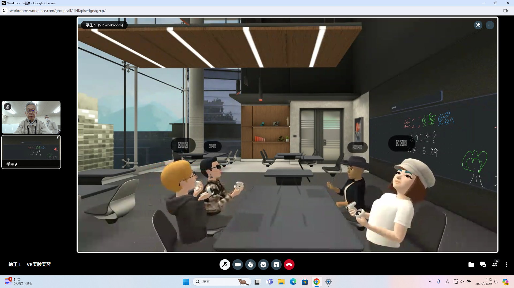

第2週目
2-1 2週目のレポートをHTMLで作る
1.内容
・人工知能の説明
・機械学習の体験
・Coding体験：3次元空間の描画
・VR体験
2.感想
初めてすることが多かったので、いろいろな新しいことが知れて勉強になった。
3. 2週目が完成した人は1週目のレポートも完成させる
2-2 機械学習体験

1.内容
コンピューターに画像を認識させて、そのポーズをしたときはグーなど認識する。
これをスクラッチで、プログラムして、グーを認識したら「パー」と言いながら10歩進む。
パーを認識したら「チョキ」と言いながら-10歩進むようになっている。
2.感想
画像をたくさんコンピューターに学習させたら、自分がした指の形を認識してくれることがすごいと思った。
少ない時間で勉強して認識してくれることに、コンピューターはすごいなと思いまいした。
2-3 VR（バーチャルリアリティー：Virtual Reality）会議室の体験

1.内容
ゴーグルをつけて、VRの空間に入って、絵をかいたりして体験する。
2.感想
初めてVRの世界に入って体験したので、楽しかったです。
VRの中でもその空間にほんとにいるような感覚になって、すごいなと思いました。
VRを使って、ゲームなどいろいろなことをしたいなと思いました。